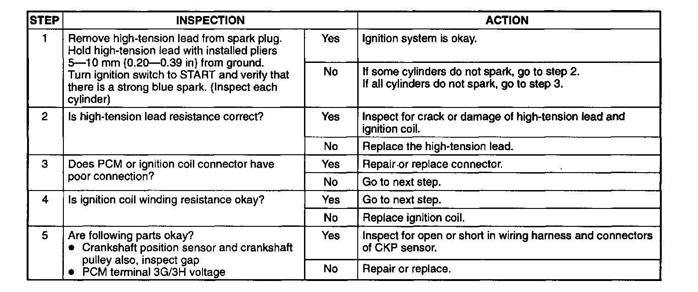

Spark Test
Spark Test1. Disconnect the negative battery cable.
2. Disconnect the fuel pump relay connector.
3. Verity that each high-tension lead and connector is connected properly.
4. Inspect the ignition system in the following procedure.
Spark Test (Step 1 To 5):

WARNING
- High voltage in the ignition system can cause strong electrical shock which can result in serious injury. Avoid direct contact to the vehicle body during the following spark test.